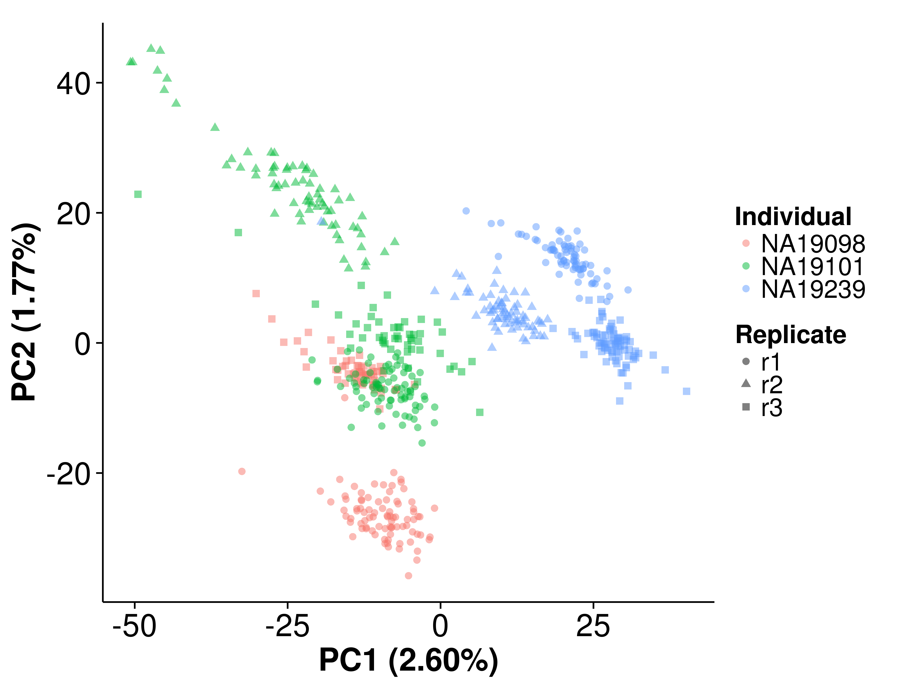
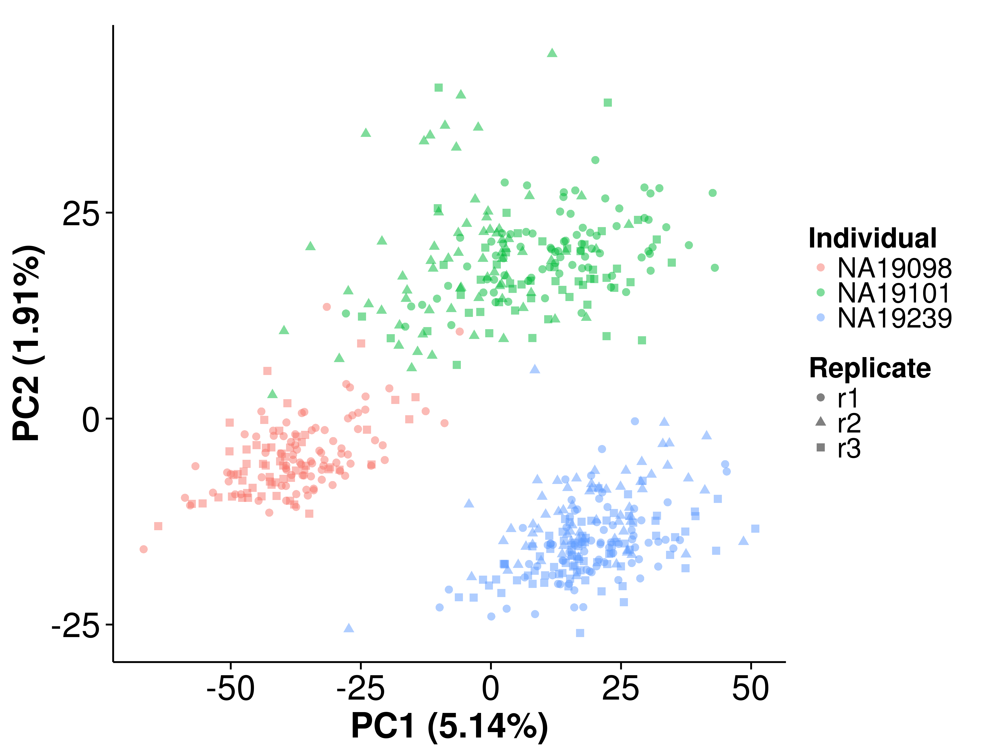
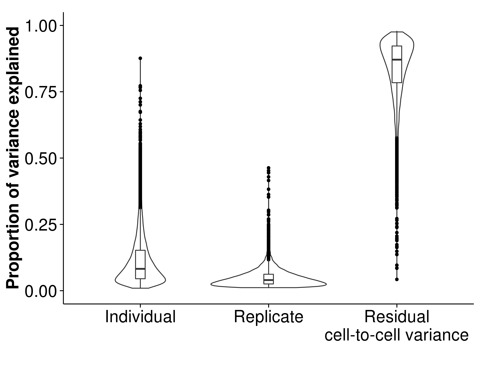
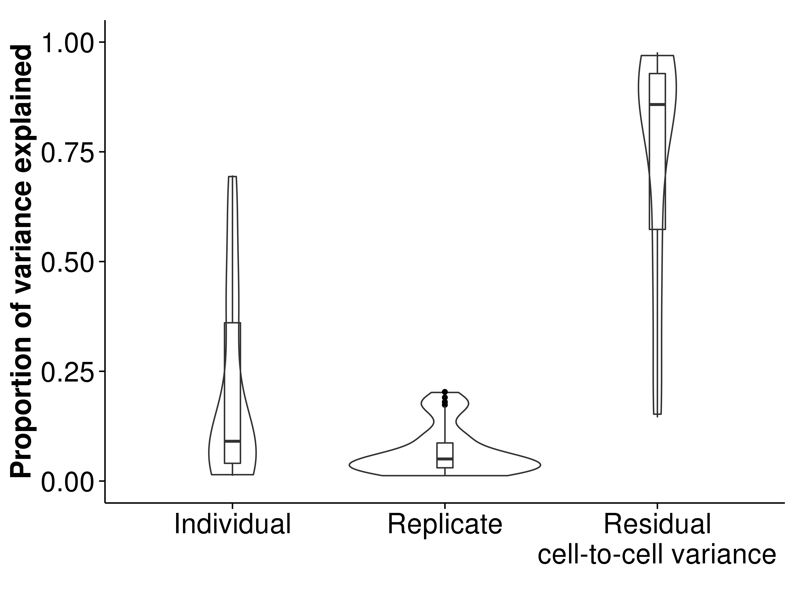
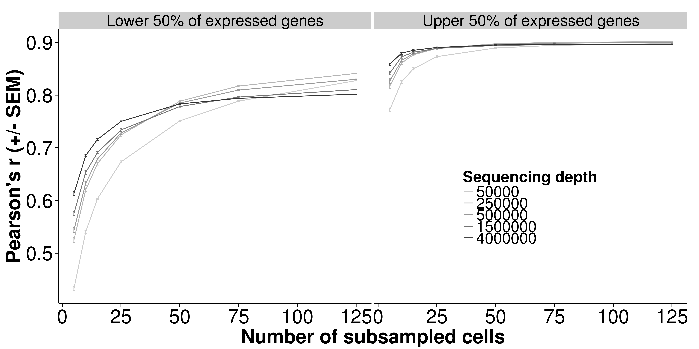

Last updated: 2016-11-08
Code version: bd286a36f14d3b332285cdc7e62258b1f616bb14
library("dplyr")
library("ggplot2")
library("cowplot")
source("functions.R")
theme_set(theme_cowplot(font_size = 20))Input filtered annotation.
anno_filter <- read.table("../data/annotation-filter.txt", header = TRUE,
stringsAsFactors = FALSE)
head(anno_filter) individual replicate well batch sample_id
1 NA19098 r1 A01 NA19098.r1 NA19098.r1.A01
2 NA19098 r1 A02 NA19098.r1 NA19098.r1.A02
3 NA19098 r1 A04 NA19098.r1 NA19098.r1.A04
4 NA19098 r1 A05 NA19098.r1 NA19098.r1.A05
5 NA19098 r1 A06 NA19098.r1 NA19098.r1.A06
6 NA19098 r1 A07 NA19098.r1 NA19098.r1.A07Input standardized molecule counts.
molecules_cpm <- read.table("../data/molecules-cpm.txt", header = TRUE,
stringsAsFactors = FALSE)
stopifnot(ncol(molecules_cpm) == nrow(anno_filter),
colnames(molecules_cpm) == anno_filter$sample_id)Input final batch-corrected molecule counts per million.
molecules_final <- read.table("../data/molecules-final.txt", header = TRUE,
stringsAsFactors = FALSE)
stopifnot(ncol(molecules_final) == nrow(anno_filter),
colnames(molecules_final) == anno_filter$sample_id)pca_molecules_cpm <- run_pca(molecules_cpm)pca_molecules_cpm_plot <- plot_pca(pca_molecules_cpm$PCs,
explained = pca_molecules_cpm$explained,
metadata = anno_filter, color = "individual",
shape = "replicate", alpha = 0.5, size = 2.2) +
scale_shape_discrete(name = "Replicate") +
scale_color_discrete(name = "Individual")
pca_molecules_cpm_plot
pca_final <- run_pca(molecules_final)pca_final_plot <- plot_pca(pca_final$PCs, explained = pca_final$explained,
metadata = anno_filter, color = "individual",
shape = "replicate", alpha = 0.5, size = 2.2) +
scale_shape_discrete(name = "Replicate") +
scale_color_discrete(name = "Individual")
pca_final_plot
load("../data/blme-variance.rda")
labels <- c("Endogenous raw", "ERCC raw",
"Endogenous CPM", "Endogenous Poisson",
"Endogenous final")
blme_list <- list(blme_raw, blme_ercc, blme_cpm,
blme_cpm_trans, blme_final)
prop_list <- vector("list", length(blme_list))
names(prop_list) <- c("raw", "ercc", "cpm", "cpm_trans", "final")
par(mfrow = c(2,3))
for (i in c(1:length(blme_list))) {
res <- blme_list[[i]]
ms_ind <- (res[,1]*2.67*70.5) + (res[,2]*70.5) + res[,3]
ms_batch <- (res[,2]*70.5) + res[,3]
ms_resid <- res[,3]
ss_ind <- ms_ind*(3-1)
ss_batch <- ms_batch*3*(2.67-1)
ss_resid <- ms_resid*3*2.67*(70.5-1)
prop_ind <- ss_ind/(ss_ind + ss_batch + ss_resid)
prop_batch <- ss_batch/(ss_ind + ss_batch + ss_resid)
prop_list[[i]] <- data.frame(prop_ind = prop_ind,
prop_batch = prop_batch)
}Endogenous genes
var_endo_df <- data.frame(proportion = c(prop_list$raw$prop_ind,
prop_list$raw$prop_batch,
1 - prop_list$raw$prop_ind -
prop_list$raw$prop_batch),
type = rep(1:3, each = dim(prop_list$raw)[1]))
var_endo_df$type <- factor(var_endo_df$type,
labels = c("Individual",
"Replicate",
"Residual\ncell-to-cell variance"))
var_endo_plot <- ggplot(var_endo_df,
aes(x = type, y = proportion)) +
geom_violin(alpha = .5) +
geom_boxplot(alpha = .01, width = 0.1,
position = position_dodge(width = 0.9)) +
ylim(0,1) + xlab("") + ylab("Proportion of variance explained")
var_endo_plotWarning: Removed 753 rows containing non-finite values (stat_ydensity).Warning: Removed 753 rows containing non-finite values (stat_boxplot).
ERCC spike-ins
var_ercc_df <- data.frame(proportion = c(prop_list$ercc$prop_ind,
prop_list$ercc$prop_batch,
1- prop_list$ercc$prop_ind -
prop_list$ercc$prop_batch),
type = rep(1:3, each = dim(prop_list$ercc)[1]))
var_ercc_df$type <- factor(var_ercc_df$type,
labels = c("Individual",
"Replicate",
"Residual\ncell-to-cell variance"))
var_ercc_plot <- ggplot(var_ercc_df,
aes(x = type, y = proportion)) +
geom_violin(alpha = .5) +
geom_boxplot(alpha = .01, width = 0.1,
position = position_dodge(width = 0.9)) +
ylim(0,1) + xlab("") + ylab("Proportion of variance explained")
var_ercc_plot
d <- read.table("../data/subsampling-results.txt",
header = TRUE, sep = "\t", stringsAsFactors = FALSE)
d_grouped <- d %>%
group_by(type, depth, gene_subset, subsampled_cells,
individual, potential_cells, available_cells,
lower_q, upper_q, available_ensg, used_ensg,
available_ercc, used_ercc) %>%
summarize(mean_detected = mean(detected_ensg),
sem_detected = sd(detected_ensg) / sqrt(length(detected_ensg)),
mean_bulk = mean(pearson_ensg),
sem_bulk = sd(pearson_ensg) / sqrt(length(pearson_ensg)),
mean_var = mean(var_pearson),
sem_var = sd(var_pearson) / sqrt(length(var_pearson)))
d_filter <- d_grouped %>% filter(individual == "NA19239",
type == "molecules",
gene_subset %in% c("lower", "upper"))
d_filter$gene_subset <- factor(d_filter$gene_subset,
levels = c("lower", "upper"),
labels = c("Lower 50% of expressed genes",
"Upper 50% of expressed genes"))theme_set(theme_cowplot(font_size = 24))
plot_bulk <- ggplot(d_filter,
aes(x = subsampled_cells, y = mean_bulk,
color = as.factor(depth))) +
geom_line() +
geom_errorbar(aes(ymin = mean_bulk - sem_bulk,
ymax = mean_bulk + sem_bulk),
width = 1) +
facet_wrap(~gene_subset) +
scale_color_grey(start = 0.8, end = 0.2, name = "Sequencing depth") +
# theme(legend.position = "none") +
theme(legend.position = c(0.75, 0.35)) +
labs(x = "Number of subsampled cells",
y = "Pearson's r (+/- SEM)")
plot_bulk
sessionInfo()R version 3.2.0 (2015-04-16)
Platform: x86_64-unknown-linux-gnu (64-bit)
locale:
[1] LC_CTYPE=en_US.UTF-8 LC_NUMERIC=C
[3] LC_TIME=en_US.UTF-8 LC_COLLATE=en_US.UTF-8
[5] LC_MONETARY=en_US.UTF-8 LC_MESSAGES=en_US.UTF-8
[7] LC_PAPER=en_US.UTF-8 LC_NAME=C
[9] LC_ADDRESS=C LC_TELEPHONE=C
[11] LC_MEASUREMENT=en_US.UTF-8 LC_IDENTIFICATION=C
attached base packages:
[1] stats graphics grDevices utils datasets methods base
other attached packages:
[1] testit_0.4 cowplot_0.3.1 ggplot2_1.0.1 dplyr_0.4.2 knitr_1.10.5
loaded via a namespace (and not attached):
[1] Rcpp_0.12.4 magrittr_1.5 MASS_7.3-40 munsell_0.4.3
[5] colorspace_1.2-6 R6_2.1.1 stringr_1.0.0 httr_0.6.1
[9] plyr_1.8.3 tools_3.2.0 parallel_3.2.0 grid_3.2.0
[13] gtable_0.1.2 DBI_0.3.1 htmltools_0.2.6 lazyeval_0.1.10
[17] yaml_2.1.13 assertthat_0.1 digest_0.6.8 reshape2_1.4.1
[21] formatR_1.2 codetools_0.2-11 bitops_1.0-6 RCurl_1.95-4.6
[25] evaluate_0.7 rmarkdown_0.6.1 labeling_0.3 stringi_1.0-1
[29] scales_0.4.0 proto_0.3-10